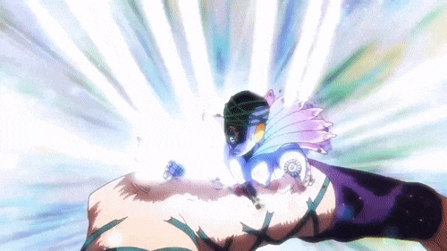
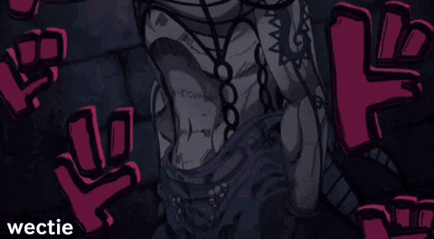

Killer Queen es un Stand de corto alcance con apariencia humanoide y un diseño felino. Su habilidad principal es convertir cualquier objeto que toca en una bomba, explotándolo sin dejar rastro. También posee técnicas secundarias muy peligrosas, como Sheer Heart Attack y Bites the Dust, que lo vuelven uno de los Stands más letales y precisos de toda la serie.

Made in Heaven es un Stand de velocidad extrema capaz de acelerar el flujo del tiempo a escala universal. Su poder permite reiniciar el universo, dándole a su usuario una ventaja abrumadora. Su diseño estilizado y su velocidad casi absoluta lo convierten en uno de los Stands más poderosos y únicos del mundo de JoJo’s.

Giorno Giovanna es un joven decidido y calmado cuyo sueño es convertirse en un “Gang-Star” para traer justicia al mundo del crimen. Inteligente, estratégico y con una gran empatía, lidera a su equipo con firmeza. Su Stand, Gold Experience, le permite crear vida, mientras que su evolución, Requiem, lo convierte en uno de los personajes más poderosos de la saga

Diavolo es el enigmático y paranoico líder de Passione, obsesionado con mantener su identidad en secreto. Es frío, calculador y extremadamente peligroso. Su Stand, King Crimson, le permite borrar instantes de tiempo y prever el futuro inmediato, lo que le da una ventaja casi absoluta en combate. Representa el poder oculto y el terror silencioso dentro del mundo criminal.